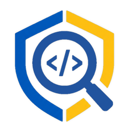

v1.4.0
2026-11-25
- Polyglot secret detection across 30+ languages & configs plus 8-ecosystem offline OSV SCA across 19 manifests.
Secret Identification and Dependency Inspection Kit (SIDIK) is a lightweight, 100% offline security scanner combining 3-layer secret detection across 30+ programming & config languages with local Google OSV dependency auditing across 8 ecosystems and 19 manifest/lockfile formats.



Detects AWS, Google, OpenAI, Stripe, GitHub PAT, Slack, JWT, private keys, database URIs, hardcoded passwords, and generic high-entropy secrets.
Understands Python, JS/TS, Go, Rust, Java, Kotlin, C#, PHP, Ruby, Swift, Shell, YAML, TOML, JSON, .env, .npmrc, and Dockerfile with cross-language env lookups.
Automatically skips noisy lockfiles and minified bundles while respecting .sidikignore patterns and # nosec / // nosec / # sidik:ignore inline suppressions.
Run via One-Shot CLI, Interactive TUI Menu, or High-DPI Bilingual GUI; export Console, SARIF v2.1.0, GitHub Annotations, HTML, Markdown, JSON, and CSV.
| Ecosystem | Supported Manifests & Lockfiles | Offline Coverage |
|---|---|---|
| PyPI | requirements*.txt, pyproject.toml, Pipfile, Pipfile.lock, poetry.lock, uv.lock, setup.py |
35,304 bundled OSV advisories + PEP 440 evaluator |
| npm | package.json, package-lock.json, yarn.lock, pnpm-lock.yaml |
Curated offline CVEs + SemVer + SQLite sync |
| Go | go.mod |
Curated offline CVEs + v / +incompatible SemVer + SQLite sync |
| crates.io | Cargo.toml, Cargo.lock |
Curated offline Rust CVEs + Cargo SemVer + SQLite sync |
| Maven | pom.xml (including ${property} interpolation) |
Curated offline Java CVEs (e.g. Log4Shell) + SQLite sync |
| Packagist | composer.json, composer.lock |
Curated offline PHP CVEs + SemVer OR/hyphen ranges + SQLite sync |
| RubyGems | Gemfile.lock |
Curated offline Ruby CVEs + SQLite sync |
| NuGet | *.csproj |
Curated offline .NET CVEs + SQLite sync |
# Install from PyPI (Core CLI or Desktop GUI edition)
pip install sidik
pip install "sidik[gui]"
# Scan any polyglot repository offline (secrets + dependencies across 8 ecosystems)
sidik . --fail-on high
sidik --target path/to/repo --format sarif --output sidik.sarif
# Sync full Google OSV advisories into the indexed local SQLite cache
sidik --update-db --ecosystem npm,go,crates
sidik --update-db --ecosystem all
sidik --db-info| Benchmark Suite | Scale | Measured Result |
|---|---|---|
| 25 Public GitHub Repositories | 186,876 LOC across 1,193 Python files | 14 FP (12.84% FPR) in 3.19s (85.7% fewer FPs than Bandit; 3.3x faster than Gitleaks) |
| Multi-Manifest PyPI SCA v2 | 200 balanced samples across 39 manifests | 100/100 TP (Precision 1.00, Recall 1.00, F1 1.00) in 0.33s |
| Controlled Secret Ablation | 100 Python files (50 positive, 50 traps) | 0 FP, 45 TP (Precision 1.00, Recall 0.90, F1 0.9474, MCC 0.9045) |
| Active Memory Overhead | tracemalloc per-repo profiling |
0.39 MB average active scan RAM per repository |